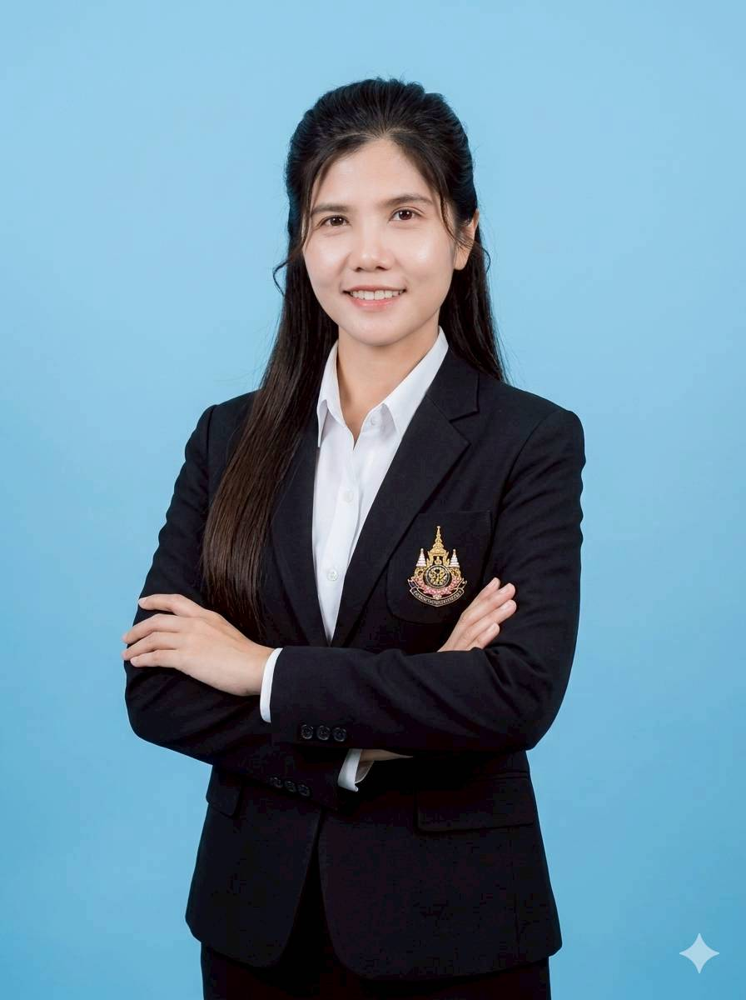
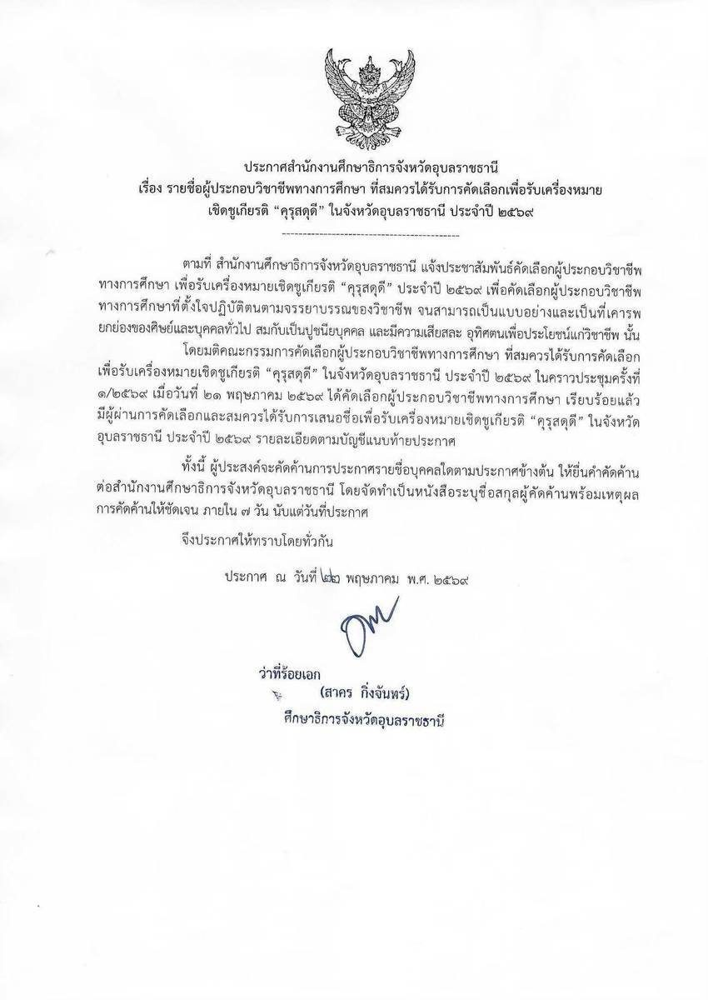
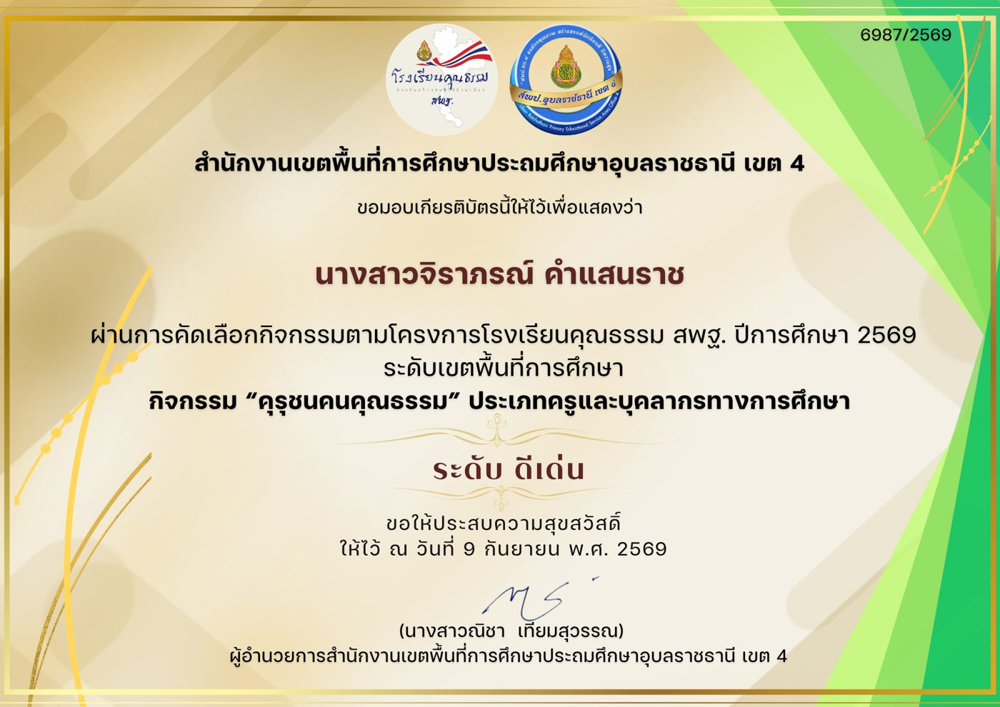
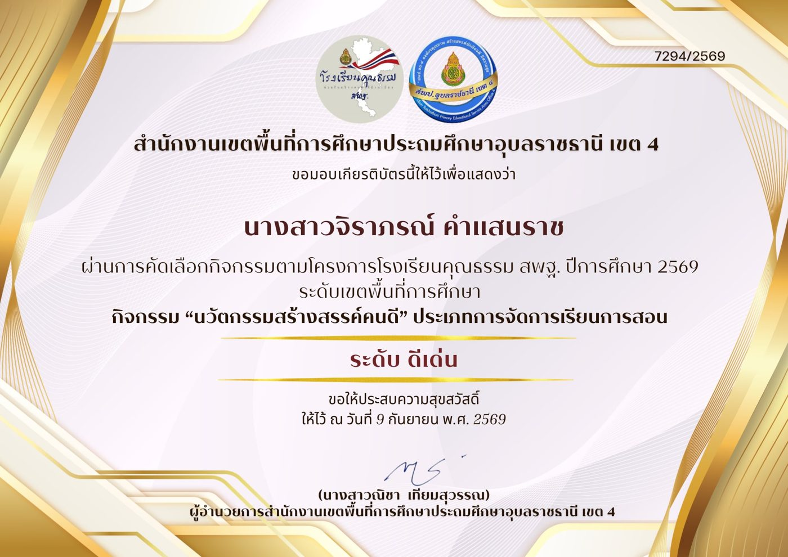
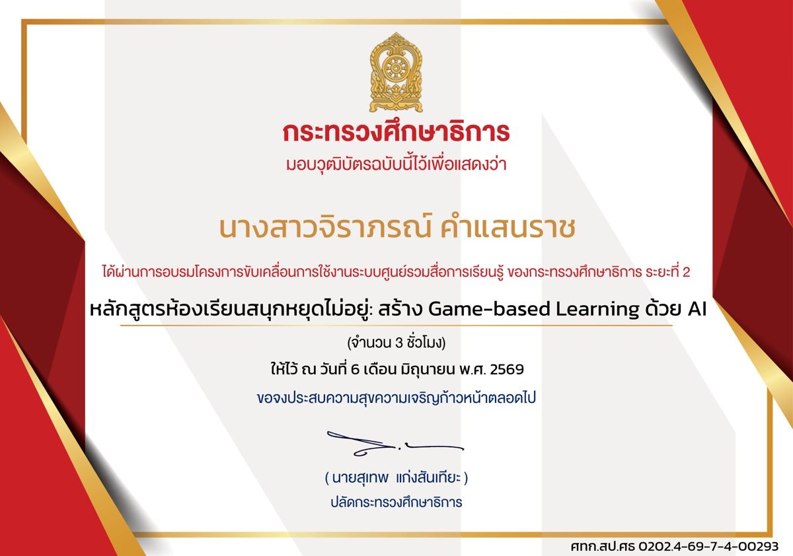
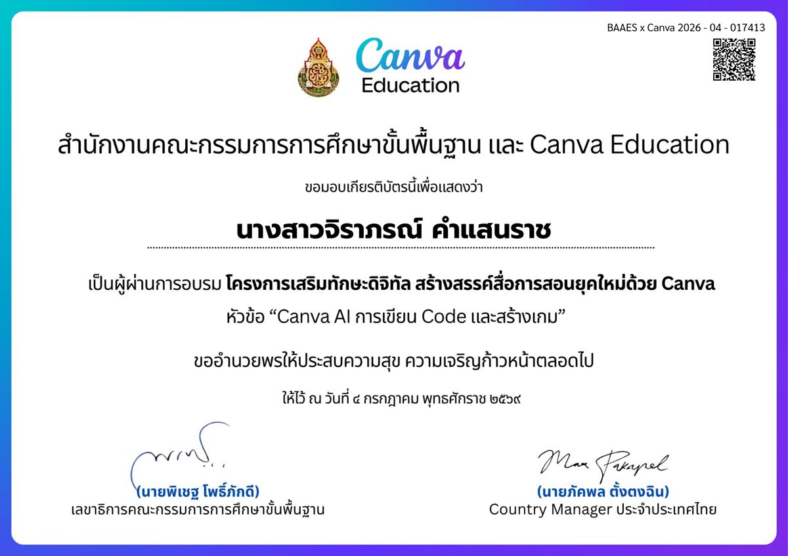
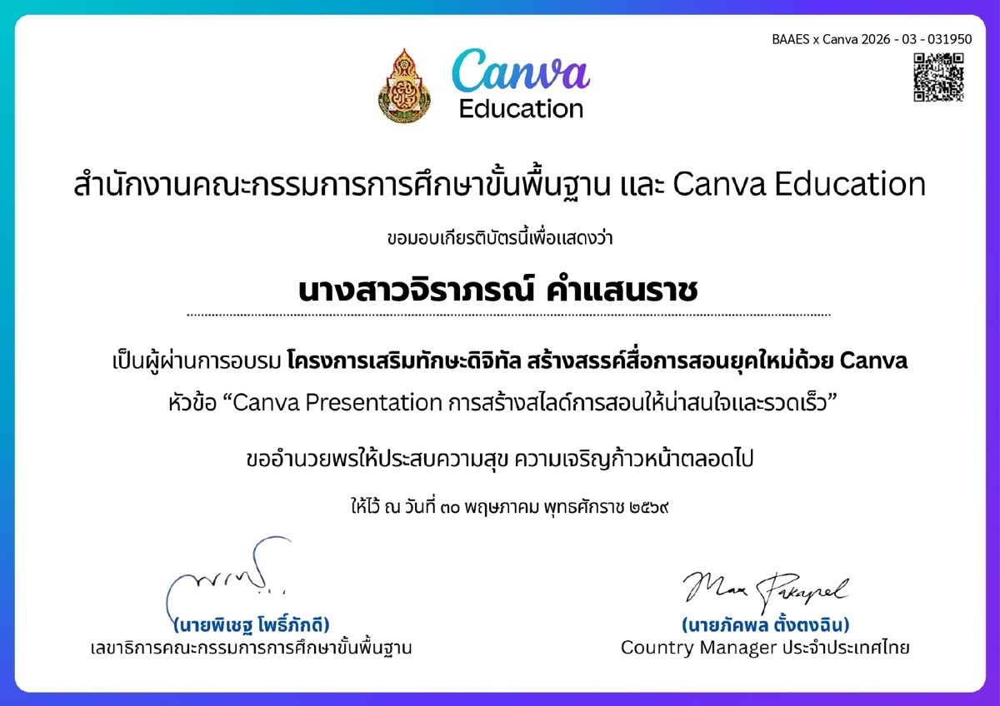

หน้าหลัก › ประวัติและผลงาน
Professional Profileครูจิราภรณ์ คำแสนราช
ครูน้อยหน่า · ครู วิทยฐานะ ครูชำนาญการพิเศษ
กลุ่มสาระการเรียนรู้คณิตศาสตร์ โรงเรียนบ้านสำโรง (คุรุประชาสามัคคี)
ประเภทครู · ประกาศสำนักงานศึกษาธิการจังหวัดอุบลราชธานี ลงวันที่ ๒๒ พฤษภาคม ๒๕๖๙
ประวัติและวุฒิการศึกษา
ข้อมูลทั่วไป
- ชื่อ–สกุล
- นางสาวจิราภรณ์ คำแสนราช
- ตำแหน่ง
- ครู วิทยฐานะ ครูชำนาญการพิเศษ
- กลุ่มสาระฯ
- คณิตศาสตร์ (สอนระดับ ม.1–ม.3 และประถมศึกษา)
- สถานศึกษา
- โรงเรียนบ้านสำโรง (คุรุประชาสามัคคี)
เลขที่ 16 หมู่ 1 ตำบลสำโรง อำเภอสำโรง จังหวัดอุบลราชธานี 34360 - สังกัด
- สำนักงานเขตพื้นที่การศึกษาประถมศึกษาอุบลราชธานี เขต 4
- เริ่มรับราชการ
- 15 พฤษภาคม 2552
- ใบอนุญาต
- ใบอนุญาตประกอบวิชาชีพครู ประเภทครูผู้สอน
วุฒิการศึกษา
- 2555ค.ม. การพัฒนาหลักสูตรและการเรียนการสอนมหาวิทยาลัยราชภัฏอุบลราชธานี
- 2552ประกาศนียบัตรวิชาชีพครูมหาวิทยาลัยขอนแก่น
- 2551วท.บ. คณิตศาสตร์มหาวิทยาลัยขอนแก่น
พื้นฐานคณิตศาสตร์จากสายวิทยาศาสตร์ ต่อยอดด้วยปริญญาโทด้านหลักสูตรและการเรียนการสอน จึงออกแบบบทเรียนจากทั้งเนื้อหาและกระบวนการเรียนรู้ของผู้เรียน
เส้นทางการทำงาน
ปฏิบัติหน้าที่ครู ณ โรงเรียนบ้านสำโรง (คุรุประชาสามัคคี) ต่อเนื่องตั้งแต่บรรจุจนถึงปัจจุบัน
-
15 พ.ค. 2552 — 14 พ.ค. 2554
ครูผู้ช่วย
เริ่มรับราชการครู กลุ่มสาระการเรียนรู้คณิตศาสตร์
-
15 พ.ค. 2554 — 14 พ.ค. 2558
ครู
ปี 2555 ได้รับรางวัล “หนึ่งแสนครูดี” จากคุรุสภา
-
15 พ.ค. 2558 — 16 มิ.ย. 2560
ครู วิทยฐานะ ครูชำนาญการ
พัฒนาการจัดการเรียนรู้คณิตศาสตร์ระดับมัธยมศึกษาตอนต้นอย่างเป็นระบบ
-
17 มิ.ย. 2560 — ปัจจุบัน
ครู วิทยฐานะ ครูชำนาญการพิเศษ
หัวหน้ากลุ่มสาระการเรียนรู้คณิตศาสตร์ ผู้นำกิจกรรม PLC และครูต้นแบบการสอน Active Learning
บทบาทและความเชี่ยวชาญ
นอกเหนือจากการสอนในชั้นเรียน ยังรับผิดชอบงานวิชาการและการพัฒนาวิชาชีพทั้งในและนอกสถานศึกษา
ขับเคลื่อนคุณภาพการจัดการเรียนการสอนของกลุ่มสาระฯ อย่างต่อเนื่อง
นำเสนอปัญหาจากชั้นเรียนจริง แลกเปลี่ยนผลการทดลองนวัตกรรม และออกแบบเครื่องมือวัดผลร่วมกัน
ได้รับการคัดเลือกจากสำนักงานคณะกรรมการการศึกษาขั้นพื้นฐาน (สพฐ.)
บรรยายและสาธิตการจัดการเรียนรู้เชิงรุก เผยแพร่เทคนิคการใช้โปรแกรม GSP และเป็นวิทยากรค่ายพัฒนาทักษะทางคณิตศาสตร์ ระดับ ม.4–ม.6 (18 มิ.ย. 2569)
ดูแลนักศึกษาฝึกประสบการณ์สอนและครูบรรจุใหม่ ทั้งด้านแผนการสอน การวัดผล และงานเอกสาร
งานศิลปหัตถกรรมนักเรียน กิจกรรม GSP และคิดเลขเร็ว
รางวัลและเกียรติยศ
รางวัลที่ได้รับจากการปฏิบัติหน้าที่ครูผู้สอน ตั้งแต่ปี 2555 จนถึงปัจจุบัน รวม 13 รายการ
-
2569
ผ่านการคัดเลือกเพื่อรับเครื่องหมายเชิดชูเกียรติ “คุรุสดุดี” ประเภทครู
สำนักงานศึกษาธิการจังหวัดอุบลราชธานี · ประกาศ ๒๒ พฤษภาคม ๒๕๖๙
คุรุสภา -
2569
ระดับดีเด่น กิจกรรม “คุรุชนคนคุณธรรม” ประเภทครูและบุคลากรทางการศึกษา
โครงการโรงเรียนคุณธรรม สพฐ. ระดับเขตพื้นที่การศึกษา · สพป.อุบลราชธานี เขต 4 (9 ก.ย. 2569)
เขตพื้นที่ -
2569
ระดับดีเด่น กิจกรรม “นวัตกรรมสร้างสรรค์คนดี” ประเภทการจัดการเรียนการสอน
โครงการโรงเรียนคุณธรรม สพฐ. ระดับเขตพื้นที่การศึกษา · สพป.อุบลราชธานี เขต 4 (9 ก.ย. 2569)
เขตพื้นที่ -
2568
รางวัลครูต้นแบบ โครงการพัฒนานวัตกรรมเพื่อยกระดับคุณภาพการจัดการศึกษาด้วยรูปแบบ Active Learning
สพฐ. (1 อำเภอ 1 โรงเรียนคุณภาพ) ระดับประถมศึกษา สร้างต้นแบบภาคตะวันออกเฉียงเหนือตอนล่าง · 6 ต.ค. 2568
สพฐ. -
2568
ระดับดีเยี่ยม การประกวดแนวปฏิบัติที่เป็นเลิศ (Best Practice) ด้านนวัตกรรมการจัดการเรียนรู้เพื่อพัฒนาคุณภาพผู้เรียน
งาน SAMRONG SYMPOSIUM 2026 โครงการขับเคลื่อนสถานศึกษานำร่องพื้นที่นวัตกรรมการศึกษา
เขตพื้นที่ -
2568
รองชนะเลิศอันดับสอง การประกวดแนวปฏิบัติที่ดี (Best Practice) ด้านการใช้ปัญญาประดิษฐ์ (AI) ในการจัดการเรียนรู้ ระดับมัธยมศึกษา
โครงการ “1 อำเภอ 1 โรงเรียนคุณภาพ”
เขตพื้นที่ -
2568
รางวัล “บุคคลดีเด่นแห่งปี” ประเภทครูผู้สอนกลุ่มสาระการเรียนรู้คณิตศาสตร์ดีเด่น
สำนักงานเขตพื้นที่การศึกษาประถมศึกษาอุบลราชธานี เขต 4
เขตพื้นที่ -
2568
รางวัลครูผู้สอนกลุ่มสาระการเรียนรู้คณิตศาสตร์ดีเด่น
สพป.อุบลราชธานี เขต 4 ร่วมกับสมาคมครูและผู้บริหารสถานศึกษาอำเภอสำโรง
เขตพื้นที่ -
2566
รางวัลครูผู้สอนกลุ่มสาระการเรียนรู้คณิตศาสตร์ดีเด่น
สพป.อุบลราชธานี เขต 4 ร่วมกับสมาคมครูและผู้บริหารสถานศึกษาอำเภอสำโรง
เขตพื้นที่ -
2565
รางวัล “บุคคลดีเด่นแห่งปี” ประเภทครูผู้สอนกลุ่มสาระการเรียนรู้คณิตศาสตร์ดีเด่น
สำนักงานเขตพื้นที่การศึกษาประถมศึกษาอุบลราชธานี เขต 4
เขตพื้นที่ -
2557
ระดับดีมาก การประกวดนวัตกรรมหรือแนวปฏิบัติที่เป็นเลิศด้านการจัดการเรียนรู้ ระดับมัธยมศึกษา
โครงการ “1 อำเภอ 1 โรงเรียนคุณภาพ”
เขตพื้นที่ -
2557
ระดับดีเด่น กิจกรรม “๙๐,๐๐๐ คุรุชนคนคุณธรรม”
โครงการโรงเรียนคุณธรรม สพฐ. ระดับเขตพื้นที่การศึกษา · สพป.อุบลราชธานี เขต 4 (30 ก.ย. 2557)
เขตพื้นที่ -
2555
รางวัล “หนึ่งแสนครูดี”
คุรุสภา
คุรุสภา
ผลงานนักเรียนในฐานะครูผู้ฝึกสอน
ผลการแข่งขันของนักเรียนที่อยู่ในความดูแล ทั้งระดับชาติและระดับเขตพื้นที่การศึกษา
ระดับชาติ
- 🥈
เหรียญเงิน — สร้างสรรค์ผลงานทางคณิตศาสตร์โดยใช้โปรแกรม GSP ระดับ ม.1–ม.3
งานศิลปหัตถกรรมนักเรียนระดับชาติ ภาคตะวันออกเฉียงเหนือ ครั้งที่ 69 ปี 2562 · จังหวัดศรีสะเกษ
ระดับชาติ - 🥉
เหรียญทองแดง — สร้างสรรค์ผลงานทางคณิตศาสตร์โดยใช้โปรแกรม GSP ระดับ ม.1–ม.3
งานศิลปหัตถกรรมนักเรียนระดับชาติ ภาคตะวันออกเฉียงเหนือ ครั้งที่ 70 ปี 2565 · จังหวัดร้อยเอ็ด
ระดับชาติ
ระดับเขตพื้นที่การศึกษา
- 🥇
เหรียญทอง ชนะเลิศ — สร้างสรรค์ผลงานทางคณิตศาสตร์โดยใช้โปรแกรม GSP ระดับ ม.1–ม.3
ศิลปหัตถกรรมนักเรียน ครั้งที่ 73 ปีการศึกษา 2568 · สพป.อุบลราชธานี เขต 4 (12 ธ.ค. 2568)
เขตพื้นที่ - 🥇
เหรียญทอง รองชนะเลิศอันดับ 2 — GSP ระดับ ป.4–ป.6
ศิลปหัตถกรรมนักเรียน ครั้งที่ 73 ปีการศึกษา 2568 · สพป.อุบลราชธานี เขต 4 (12 ธ.ค. 2568)
เขตพื้นที่ - 🥈
เหรียญเงิน — การแข่งขัน Sudoku ระดับ ม.1–ม.3
ศิลปหัตถกรรมนักเรียน ครั้งที่ 73 ปีการศึกษา 2568 · สพป.อุบลราชธานี เขต 4 (12 ธ.ค. 2568)
เขตพื้นที่ - 🥈
เหรียญเงิน — กิจกรรมแข่งขันด้านวิชาการ (Sudoku) ระดับ ม.1–ม.3
งานสัปดาห์หนังสือ ปีการศึกษา 2568 · ศูนย์การเรียนรู้ สุนีย์ทาวเวอร์ (2 ต.ค. – 2 พ.ย. 2568)
เขตพื้นที่
นอกจากนี้ยังทำหน้าที่ครูที่ปรึกษานักเรียนเข้าแข่งขันตอบปัญหาทางคณิตศาสตร์ ระดับมัธยมศึกษาตอนต้นและตอนปลาย งานสัปดาห์วิทยาศาสตร์แห่งชาติ ประจำปี 2568 คณะวิทยาศาสตร์ มหาวิทยาลัยราชภัฏอุบลราชธานี
นวัตกรรมและแนวทางการจัดการเรียนรู้
ออกแบบการเรียนรู้คณิตศาสตร์ให้ผู้เรียนได้คิด วิเคราะห์ และสร้างองค์ความรู้ด้วยตนเอง
นำแนวคิดการเรียนรู้เชิงรุกมาออกแบบกิจกรรมการเรียนการสอนคณิตศาสตร์ระดับมัธยมศึกษาอย่างเป็นระบบ จนได้รับการคัดเลือกเป็นครูต้นแบบการสอน Active Learning
ได้รับการรับรองจาก สพฐ.
ใช้ GSP เป็นเครื่องมือให้นักเรียนสร้างและทดลองกับรูปเรขาคณิตได้ด้วยตนเอง พร้อมเผยแพร่เทคนิคการใช้งานให้เพื่อนครู
นำนักเรียนคว้ารางวัลระดับชาติ 2 ครั้ง
ออกแบบชุดกิจกรรมฝึกคิดเลขเร็วที่ไล่ระดับความยาก เพื่อสร้างความแม่นยำและความมั่นใจในการคำนวณพื้นฐาน
ใช้จริงในชั้นเรียนและเวทีแข่งขัน
นำ AI และสื่อดิจิทัลมาช่วยออกแบบกิจกรรม วัดผล และให้ข้อมูลย้อนกลับแก่ผู้เรียน สอดคล้องกับทักษะการเรียนรู้ในศตวรรษที่ 21
รองชนะเลิศอันดับ 2 Best Practice ด้าน AI
การพัฒนาตนเองทางวิชาชีพ
การประชุม อบรม และสัมมนาทางวิชาการ รวม 22 หลักสูตร/กิจกรรม ในปีงบประมาณ 2568–2569 เน้นการนำปัญญาประดิษฐ์และสื่อดิจิทัลมาใช้ในการจัดการเรียนรู้และการประเมินผล
ปีงบประมาณ 2568
- อบรมเชิงปฏิบัติการการใช้งานนวัตกรรมระบบสนับสนุนการบริหารจัดการสำนักงานศึกษาธิการจังหวัด PROVINCE MANAGEMENT SUPPORT SYSTEM (PMSS) · ศธจ.อุบลราชธานี
- อบรมเชิงปฏิบัติการ หลักสูตรพัฒนาศักยภาพบุคลากรทางการศึกษาเพื่อเป็นผู้หนุนนำครูสู่ผู้อำนวยการเรียนรู้ สสวท.
- เสวนาวิชาการ “การสร้างอัตลักษณ์ผลงาน สู่ความเชี่ยวชาญในวิชาชีพครู” ระบบออนไลน์ · สพฐ.
- ครูที่ปรึกษานักเรียนแข่งขันตอบปัญหาทางคณิตศาสตร์ ระดับ ม.ต้น และ ม.ปลาย สัปดาห์วิทยาศาสตร์แห่งชาติ · คณะวิทยาศาสตร์ ม.ราชภัฏอุบลราชธานี
- ถอดบทเรียนแลกเปลี่ยนเรียนรู้การใช้ปัญญาประดิษฐ์ (AI) ในการบริหารจัดการเรียนรู้ โครงการ 1 อำเภอ 1 โรงเรียนคุณภาพ · สพป.อุบลราชธานี เขต 4
- อบรมเชิงปฏิบัติการ “การคิดค้นนวัตกรรมการจัดการเรียนรู้ สำหรับครูเชี่ยวชาญ รุ่นที่ 3” ออนไลน์ผ่าน Zoom
- ออกแบบแผนการจัดการเรียนรู้และเรื่องเล่าความสำเร็จ รูปแบบ Active Learning จำนวน 20 ชั่วโมง สพฐ. ร่วมกับ ม.ราชภัฏอุบลราชธานี
- ผลิตสื่อวีดิทัศน์กลยุทธ์วิธีการสอนของครูต้นแบบ รูปแบบ Active Learning ระดับประถมศึกษา · ภาคตะวันออกเฉียงเหนือตอนล่าง
- โมดูล P: Smart PA ด้วย AI จำนวน 6 ชั่วโมง โครงการ AI for Teachers
- โมดูล A: AI สำหรับการจัดการเรียนรู้และการประเมินผล จำนวน 6 ชั่วโมง โครงการ AI for Teachers
ปีงบประมาณ 2569
- เสวนาวิชาการ “การสร้างอัตลักษณ์ผลงาน สู่ความเชี่ยวชาญในวิชาชีพครู” ออนไลน์ผ่าน Zoom
- โครงการพัฒนาครูนวัตกรด้วยการประเมินด้วยการเรียนรู้ (Assessment for Learning: AfL) เพื่อยกระดับคุณภาพผู้เรียนในพื้นที่จังหวัดอุบลราชธานี
- “Canva Essential: Canva for Education (Features & Benefits)” โครงการเสริมทักษะดิจิทัลฯ · สพฐ. ร่วมกับ Canva Education
- “Canva Presentation การสร้างสไลด์การสอนให้น่าสนใจและรวดเร็ว” สพฐ. ร่วมกับ Canva Education
- หลักสูตรห้องเรียนสนุกหยุดไม่อยู่: สร้าง Game-based Learning ด้วย AI (3 ชั่วโมง) ศูนย์รวมสื่อการเรียนรู้ กระทรวงศึกษาธิการ ระยะที่ 2
- อบรมเชิงปฏิบัติการ “การขับเคลื่อนการประยุกต์ใช้อุปกรณ์กับแพลตฟอร์มการเรียนรู้แห่งชาติด้วยเทคโนโลยี (NDLP)” จำนวน 8 ชั่วโมง สพป.อุบลราชธานี เขต 4
- หลักสูตร AI ผู้ช่วยสอนส่วนตัว: ออกแบบการเรียนรู้เฉพาะบุคคล (3 ชั่วโมง) ศูนย์รวมสื่อการเรียนรู้ กระทรวงศึกษาธิการ ระยะที่ 2
- หลักสูตรการจัดการเรียนรู้แบบผสมผสานด้วย AI (3 ชั่วโมง) ศูนย์รวมสื่อการเรียนรู้ กระทรวงศึกษาธิการ ระยะที่ 2
- หลักสูตรวิจัยในชั้นเรียนเรื่องกล้วย ๆ: ใช้ AI ช่วยวิเคราะห์ข้อมูลและเขียนโครงร่าง (3 ชั่วโมง) ศูนย์รวมสื่อการเรียนรู้ กระทรวงศึกษาธิการ ระยะที่ 2
- “Canva AI การเขียน Code และสร้างเกม” สพฐ. ร่วมกับ Canva Education
- หลักสูตรการบูรณาการปัญญาประดิษฐ์สู่การเรียนรู้เชิงสร้างสรรค์ในห้องเรียน สสวท.
- ชุดหลักสูตรการประเมินเพื่อพัฒนาผู้เรียน ระดับ ม.ต้น รุ่นที่ 3 — หลักสูตร 1–4 รวม 12 ชั่วโมง ความรู้เบื้องต้น · กระบวนการประเมิน · เทคนิคค้นหาร่องรอยการเรียนรู้ · การประเมินตนเองและโดยเพื่อน · สสวท.
เกียรติบัตรและประกาศ
หลักฐานอ้างอิงบางส่วนจากแฟ้มผลงาน ทั้งรางวัลเชิดชูเกียรติและวุฒิบัตรการพัฒนาตนเอง






กดที่ภาพเพื่อดูขนาดเต็ม · เอกสารหลักฐานฉบับสมบูรณ์อยู่ในแฟ้มประวัติและผลงานของครู